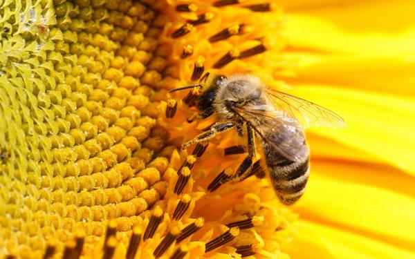
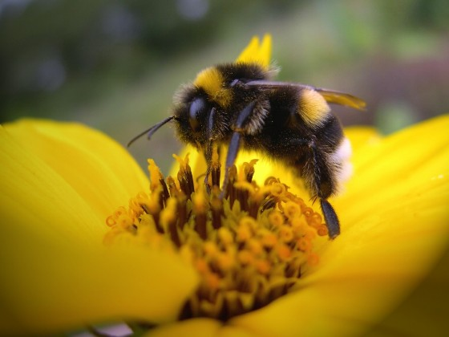

Новая линейка подкормок
Качественное питание – залог здоровья. Данное утверждение одинаково справедливо как для человека, так и для пчелы. Для пчелы качественным питанием является нектар и пыльца растений. Но не всегда естественные корма для пчел доступны, а мед может решить все задачи.

Отличие начинается с выбора ингредиентов. Мы исходим из того, что человек может не распознать низкое качество сахара и другого сырья, но пчела определяет это безошибочно. Поэтому сахар закупается повышенной степени очистки. Этому же принципу мы следуем и при выборе других ингредиентов для производства подкормок СтандартЛайт и ПрофиЛайт.
Цена на мед
| Сорт | Цена | Доступно |
|---|---|---|
| Linden | 200 руб за литр | 10 тонн |
| Pine | 300 руб за литр | 7 тонн |
| Clover | 400 руб за литр | 5 тонн |
| Dandelion | 500 руб за литр | 3 тонны |
| Barrel | 600 руб за литр | 1 тонна |
Отличие кормов
Отличие начинается с выбора ингредиентов. Мы исходим из того, что человек может не распознать низкое качество сахара и другого сырья, но пчела определяет это безошибочно. Поэтому сахар закупается повышенной степени очистки. Этому же принципу мы следуем и при выборе других ингредиентов для производства подкормок СтандартЛайт и ПрофиЛайт.
Практическое использование

Природа наделила пчёл широкими наследственными способностями продолжения рода в сложных условиях выживание независимо от целесообразности варианта использования молочных желез. Последствия использования их организмом пчелы, разной степени зрелости, отражается на качестве потомства и в первую очередь на жизнеспособности кормилиц.
Жизнеспособность матки с равной генетической основой, заложенной в яйце, измеряется годами. Разница состоит в питании с личиночного возраста. Она не вырабатывает своего продукта, а занимается расфасовкой в яйца маточного молочка – эликсира жизнеспособности. Пчела производит этот эликсир, питаясь продуктами растительного происхождения и утрачивает потенциал, заложенный в яйце. Его остаток для собственного использования зависит от количества расплода и зрелости организма на момент использования молочных желез.